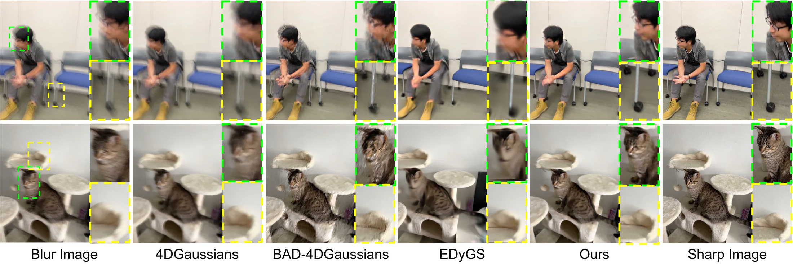
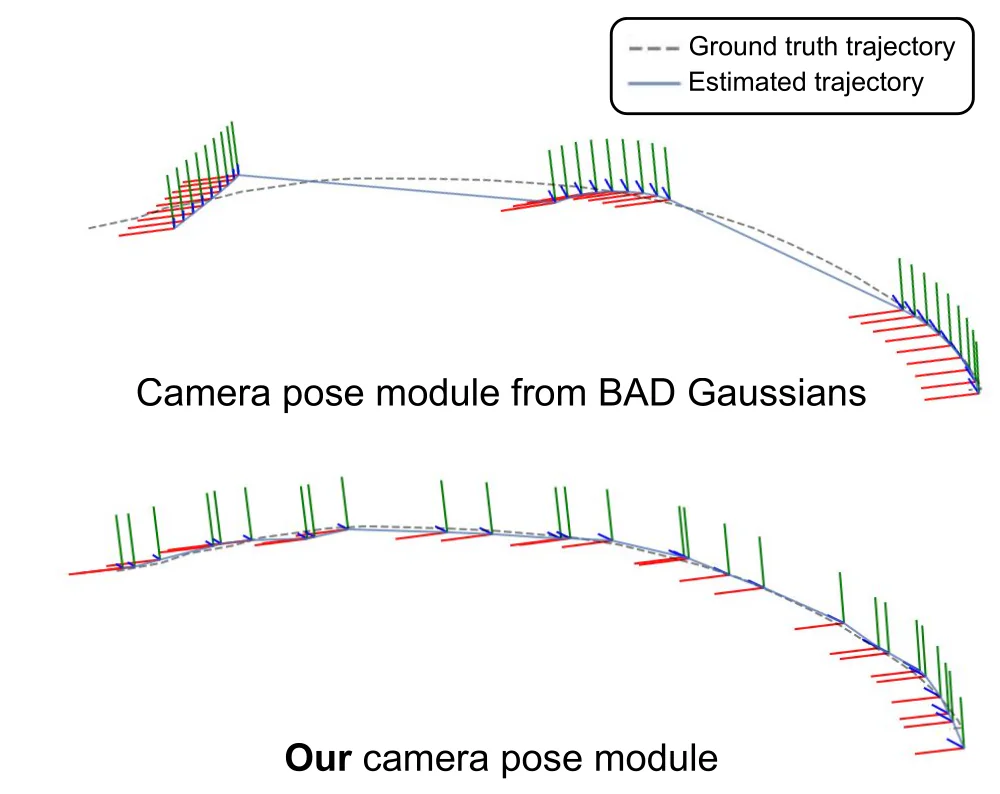
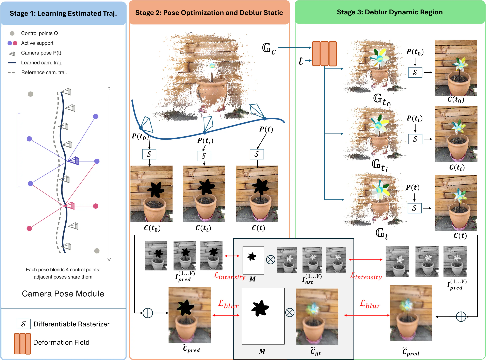

1st Workshop on Physical World AI, NeurIPS 2026
Event-Guided Dynamic Reconstruction under Extreme Motion Blur
Motion blur destroys the feature correspondences that reconstruction depends on, and Structure-from-Motion collapses with it. We use the microsecond timing of an event camera to recover them, and model the camera path as one continuous spline rather than a separate pose per frame.
1Arizona State University 2Rider University

Novel views under extreme blur. Ours stays sharp where the baselines smear or tear.
Method
Events restore the edges, a spline restores the motion
COLMAP finds keypoints as regions of strong intensity change, and extreme blur averages those edges away. On our benchmark it recovers no camera poses at all at severe or extreme blur, leaving every blur-aware method without the initialization it assumes. The Event-based Double Integral turns asynchronous events plus a blurred frame back into sharp intensity images, which replace the raw frames during SfM. Features reappear, and poses become estimable at a higher frequency than the blurred frames themselves.
The trajectory is then a single cubic B-spline in SE(3), not a pose per frame. Each control point supports a window of time and adjacent poses share them, so temporal coherence is a property of the representation rather than a penalty bolted onto the loss. That is where the accuracy comes from: pose error drops 35%.


Results
Eight scenes, seven methods, extreme blur throughout
Deblurring PSNR
21.3121.83 dB
+0.52 dB
best baseline: EDyGS
Novel view synthesis, SI-PSNR
19.4020.42 dB
+1.02 dB
best baseline: BAD-4DGau. (w/ EV)
Absolute pose error
1.831.19 cm
35% lower
best baseline: EDyGS
Left to right: blurred input, 4DGaussians, 4DGaussians + MPRNet, BAD-4DGaussians, EDyGS, ours, sharp reference. All methods use the camera poses from our event-guided pipeline, because none of them can be run without them.
| Method | Deblurring | Novel view synthesis | ||||
|---|---|---|---|---|---|---|
| PSNR ↑ | SSIM ↑ | LPIPS ↓ | SI-PSNR ↑ | SI-SSIM ↑ | SI-LPIPS ↓ | |
| ED3DGS | 19.59 | 0.5244 | 0.5365 | 18.13 | 0.5071 | 0.5521 |
| 4DGaussians | 19.85 | 0.5321 | 0.5398 | 18.68 | 0.5129 | 0.5536 |
| 4DGaussians + MPRNet | 19.66 | 0.5258 | 0.5344 | 18.69 | 0.5120 | 0.5442 |
| DyBluRF | 17.42 | 0.2717 | 0.6939 | 16.54 | 0.2597 | 0.7022 |
| BAD-4DGaussians | 18.65 | 0.4592 | 0.4866 | 17.88 | 0.4498 | 0.4961 |
| 4DGaussians (w/ EV) | 20.35 | 0.5467 | 0.5199 | 19.07 | 0.5241 | 0.5322 |
| BAD-4DGaussians (w/ EV) | 20.98 | 0.5488 | 0.4358 | 19.40 | 0.5170 | 0.4556 |
| EDyGS | 21.31 | 0.5881 | 0.5058 | 19.07 | 0.5360 | 0.5227 |
| Ours | 21.83 | 0.5755 | 0.4091 | 20.42 | 0.5503 | 0.4244 |
Paper
Cite this work
@inproceedings{vaghela2026eventguided,
title = {Event-Guided Dynamic Reconstruction under Extreme Motion Blur},
author = {Vaghela, Arpitsinh and Verma, Aayush Atul and Chanda, Kaustav
and Huang, Chi-Yao and Lu, Duo and Chakravarthi, Bharatesh
and Yang, Yezhou},
booktitle = {NeurIPS 2026 Workshop on Physical World AI},
year = {2026}
}